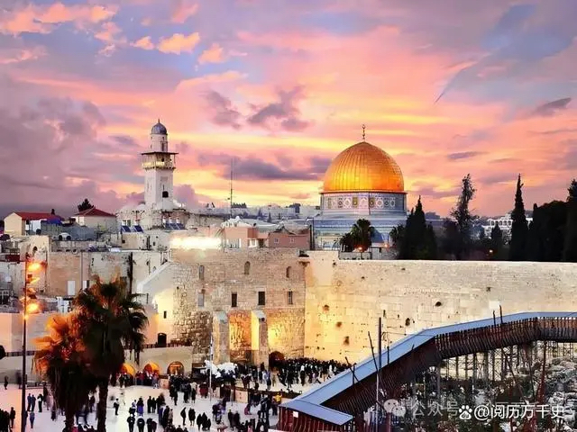
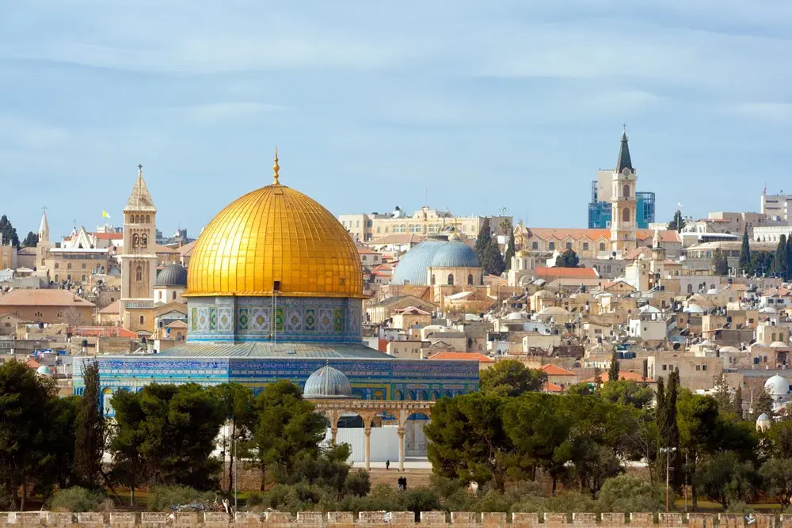
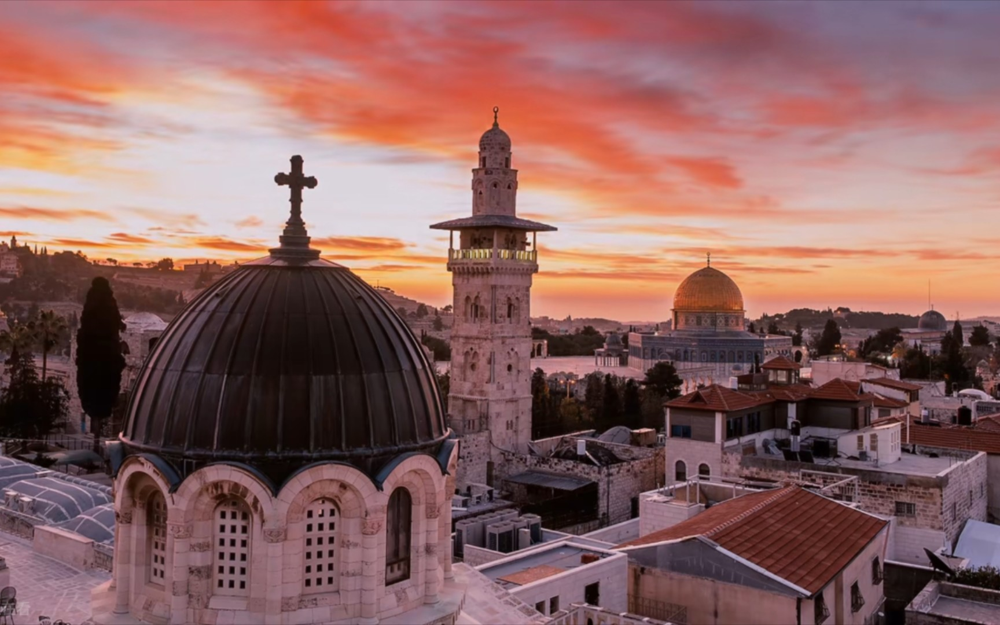

耶路撒冷
耶路撒冷作为丝绸之路上的重要城市，见证了东西方文明的交流与融合。 在唐代，中国的丝绸、造纸术等通过丝绸之路从长安传入了阿拉伯世界，也传入了耶路撒冷。同时，来自耶路撒冷等地的阿拉伯人把伊斯兰教传入中国。
丝绸之路不仅促进了商品和技术的交流，还促进了宗教、文化和思想的传播。耶路撒冷作为三大宗教的圣地，吸引了来自世界各地的信徒和学者，成为了一个多元文化的交汇点，耶路撒冷在丝绸之路上扮演着举足轻重的角色。


它不仅是三大宗教的圣地和多元文化的交汇点，还是东西方文明交流与融合的见证者。尽管面临着政治和文化的挑战，但耶路撒冷依然以其独特的魅力和深厚的历史底蕴吸引着世界各地的游客和学者。